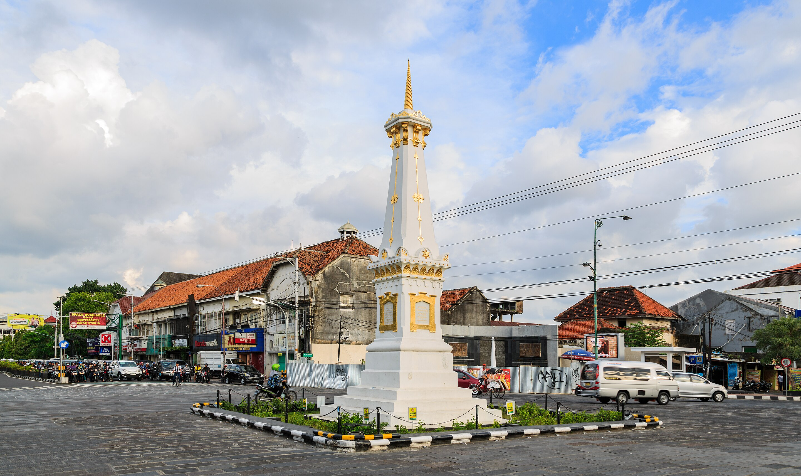

Kota Yogyakarta
D.I. Yogyakarta
Kota Yogyakarta (bahasa Jawa: ꦔꦪꦺꦴꦒꦾꦏꦂꦠ, translit. Script error: The function "transl" does not exist., pengucapan bahasa Jawa: [kuʈɔ ŋajogjɔˈkart̪ɔ], atau dikenal oleh masyarakat setempat dengan sebutan nama Yogya atau Jogja) adalah ibu kota sekaligus pusat pemerintahan dan perekonomian Daerah Istimewa Yogyakarta, Indonesia. Kota ini adalah kota yang mempertahankan konsep tradisional dan budaya Jawa.
Salah satu kemantren di Yogyakarta, yaitu Kotagede (Kuthagedhe dalam penulisan bahasa Jawa) pernah menjadi pusat Kesultanan Mataram antara kurun tahun 1575–1640. Kini, Yogyakarta menjadi tempat tinggal dua penerus Mataram, yakni Sultan Hamengkubuwana dan Adipati Paku Alam, yang berada di Keraton Ngayogyakarta dan Pura Pakualaman.
Jumlah Penduduk
| No | Jenis Kelamin | Jumlah |
|---|---|---|
| 1 | Laki-laki | 202.478 jiwa |
| 2 | Perempuan | 213.127 jiwa |
| 3 | Total | 415.021 jiwa |
Kecamatan
- Danurejan
- Gedongtengen
- Gondokusuman
- Gondomanan
- Jetis
- Kotagede
- Kraton
- Mantrijeron
- Mergangsan
- Ngampilan
- Pakualaman
- Tegalrejo
- Umbulharjo
- Wirobrajan
Website Pemkot Jogja
